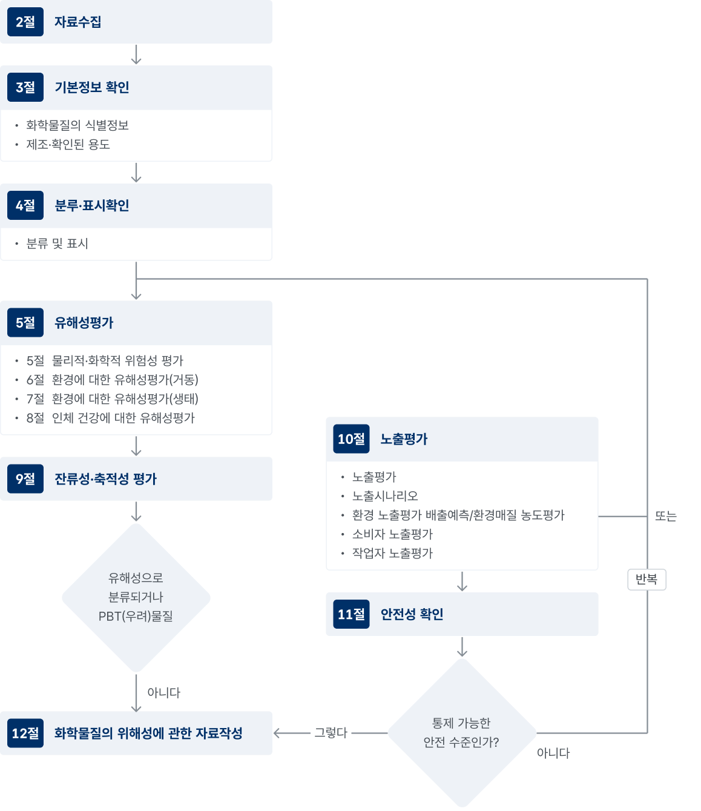

위해성자료 작성도구 안내
위해성의 개념
- 특정 화학물질이 사람의 건강이나 환경 중 생물에게 바람직하지 않은 영향을 줄 가능성
- 위해성의 크기는 화학물질의 [유해성] 정도와 [노출량]으로 정해짐
→ 유해성이 강한 화학물질이어도 노출량이 적으면 위해성은 작음
→ 유해성이 약한 화학물질이어도 노출량이 많으면 위해성은 커짐
위해성자료란?
화학물질 제조·수입자가 해당 화학물질의 위해성을 제조 또는 사용 과정에서 적절한 방법으로 안전하게 통제하고 있는가를 평가하여 작성한 것
- 화학물질의 용도에 따른 전 생애 단계를 고려하고, 잠재적 위해성과 권고하는 위해성관리대책 및 취급조건을 고려하여 합리적으로 예상할 수 있는 사람 또는 환경에 대한 노출 수준이 비교된 자료
위해성자료 작성 제출 대상
- 화학물질을 연간 10톤 이상 제조·수입하는 경우
위해성자료 작성에 관한 일반 원칙 (시행규칙 별표2)
- 화학물질의 제조 및 하위 사용자로부터 확인한 용도를 포함한 모든 용도에 따른 화학물질의 전 생애 단계를 고려하여 작성하여야 한다.
- 위해성 자료는 화학물질의 잠재적 유해성과 권고되는 위해관리수단 · 취급조건 등을 고려하면서 이미 알고 있거나 합리적으로 예상할 수 있는 사람 또는 환경에 대한 노출 수준을 비교하여 작성하여야 한다.
- 구조 유사성으로 인해 물리적 · 화학적 특성, 인체 및 환경의 유해성이 유사하거나 규칙적인 경향을 가지는 하나의 그룹이나 물질 카테고리로 간주되어 어떤 화학물질에 대한 위해성 자료가 다른 화학물질에 대한 위해성 자료의 작성에 충분하다고 판단되는 경우 그 자료를 이용하여 위해성 자료를 작성할 수 있다. 이 경우 그 타당성에 대한 증거를 함께 제시하여야 한다.
-
위해성 자료를 작성하는데 있어서 시험계획서에 따른 추가적인 시험 정보가 필요한 경우에는, 해당 정보의 필요성을 함께 적어야 한다.
1) 물리적ㆍ화학적 위험성평가
2) 환경에 대한 유해성(분해성 및 농축성 등 거동)평가
3) 환경에 대한 유해성(생태영향)평가
4) 인체 건강에 대한 유해성평가
5) 잔류성ㆍ축적성 평가
6) 노출평가(노출시나리오 개발 및 노출예측)
7) 안전성 확인 - 노출평가는 화학물질 제조자 자신의 용도와 하위사용자의 용도를 확인하여 해당 화학물질이 전 생애 동안 제조 · 사용되는 방법과, 사람과 환경에 대한 노출을 통제하거나 하위사용자에게 통제하도록 권고하는 방법에 관한 일련의 세부 조건인 노출시나리오를 상세히 기술하는 것을 말한다.
위해성자료 작성 절차
화학물질의 위해성에 관한 자료 작성

화학물질의 위해성에 관한 자료 작성지침(2021, 국립환경과학원) 발췌